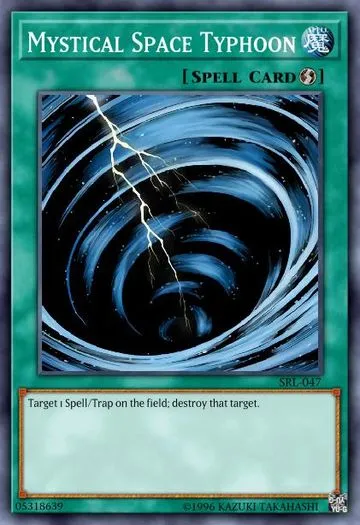

Lady Harpia
Campo de caça das harpias
|  | ||||
|---|---|---|---|---|
 |
||||
- A ideia geral do deck é criar um campo com no minímo uma Harpie Slash Lady no turno 1 e ganhar controlando as jogadas do seu opoenente
- Jogando o turno 1
- Sua ideia inicial é terminar com a Slash Lady e magias/armadilhas para usar no turno do oponente
- O melhor combo de turno 1 é usar o efeito da medium, descartar a harpista e invocar a perfumista, com isso, terá uma magia pelo efeito da perfumista e um monstro no final do turno
- Use as duas harpias que colocou no campo e invoque a Slash lady
- Escolha as cartas que irá colocar para baixo e termine seu turno
- Jogando o turno 2
- Tente lidar com as cartas do oponente com o efeito do campo que a sua skill te da, foque em construir sua board no meio disso e termine o jogo o mais rápido possível
- Siga as mesmas ideias do turno 1 para executar o seu campo e tirar o melhor proveito dele